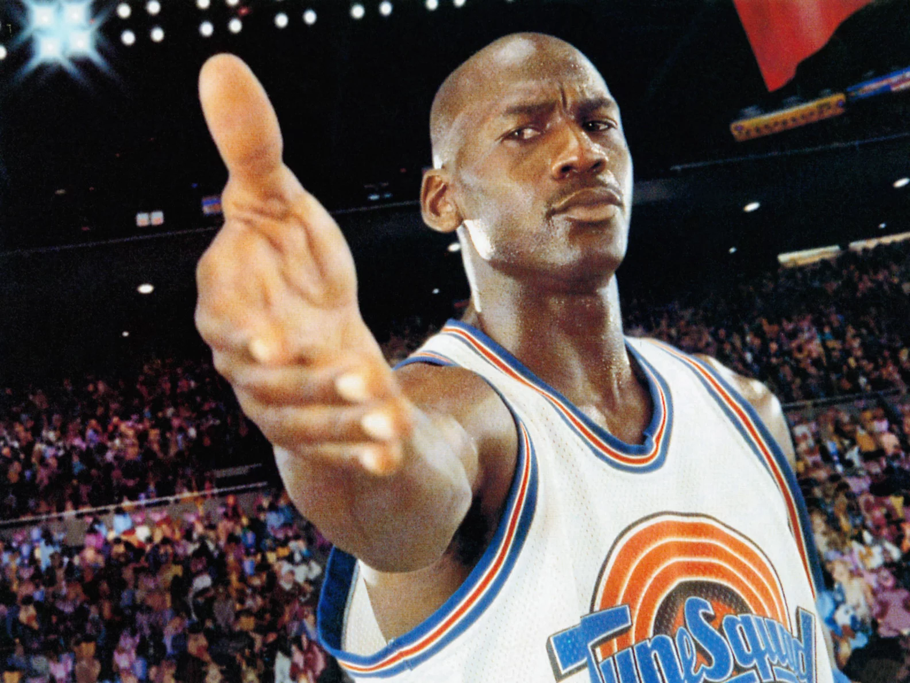
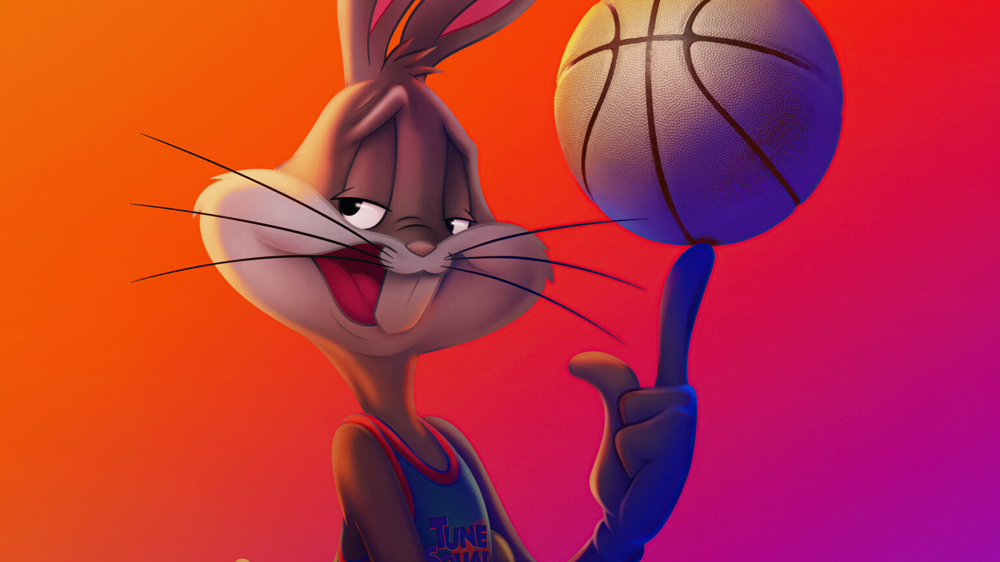

-

Micheal Jordan
In "Space Jam," Michael Jordan plays a fictionalized version of himself in a blend of live-action and animation. The film, released in 1996, revolves around Jordan's journey from retirement back to basketball, but with a fantastical twist involving the beloved Looney Tunes characters.
-

Bugs Bunny
In "Space Jam," Bugs Bunny plays a central role as the leader of the Looney Tunes and a pivotal character in the storyline. As an iconic animated character created by Tex Avery and Bob Clampett, Bugs Bunny brings his cleverness and charisma to the film, blending his classic antics with a high-stakes adventure.
-

Lola Bunny
In "Space Jam," Lola Bunny makes her debut as a new character in the Looney Tunes universe. Introduced as a talented and confident basketball player, Lola quickly becomes an essential member of the Tune Squad and a significant figure in the film.